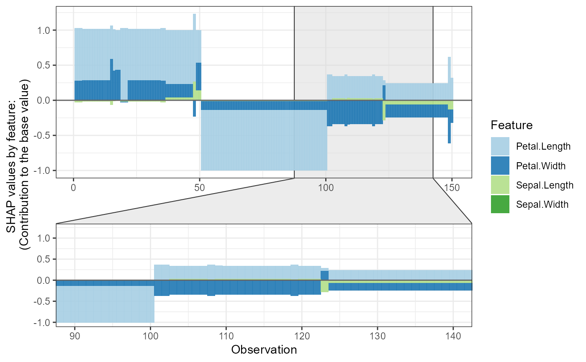

The force/stack plot, optional to zoom in at certain x-axis location or zoom in a specific cluster of observations.
shap.plot.force_plot( shapobs, id = "sorted_id", zoom_in_location = NULL, y_parent_limit = NULL, y_zoomin_limit = NULL, zoom_in = TRUE, zoom_in_group = NULL )
Arguments
| shapobs | The dataset obtained by |
|---|---|
| id | the id variable. |
| zoom_in_location | where to zoom in, default at place of 60 percent of the data. |
| y_parent_limit | set y-axis limits. |
| y_zoomin_limit |
|
| zoom_in | default to TRUE, zoom in by |
| zoom_in_group | optional to zoom in certain cluster. |
Examples
# **SHAP force plot** plot_data <- shap.prep.stack.data(shap_contrib = shap_values_iris, n_groups = 4)#>shap.plot.force_plot(plot_data)#>shap.plot.force_plot(plot_data, zoom_in_group = 2)#>